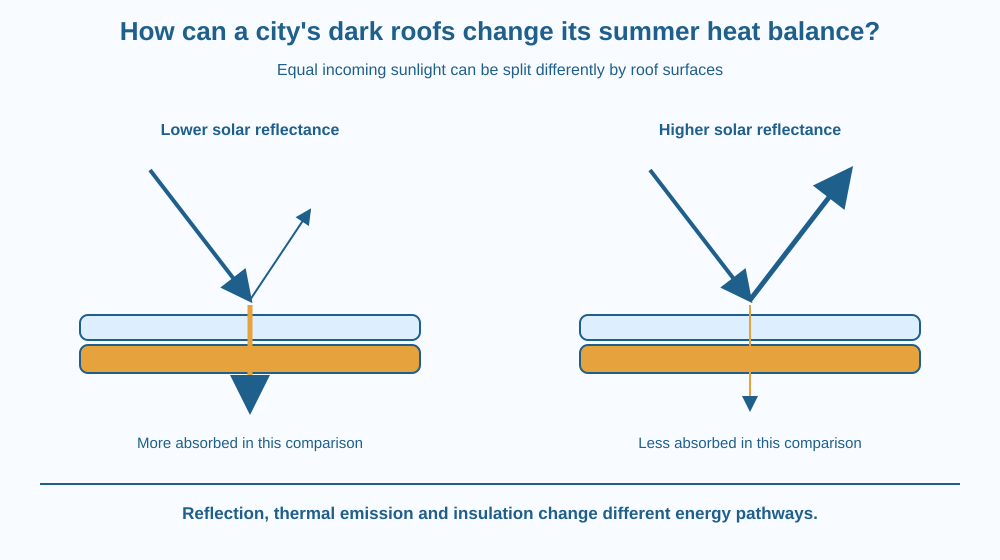

Explain how a roof's solar reflectance, or albedo, affects absorbed sunlight. Distinguish reflection from thermal emission and insulation. Evaluate a roof as part of an urban heat balance without assuming visible colour alone or one material label predicts every building outcome.
Two roofs receive similar sunlight, yet one absorbs more of the incoming solar energy. That difference can influence the surface temperature and energy transferred into the building and nearby air.
A dark-looking roof often absorbs strongly, but colour seen by human eyes is not a complete measurement across the solar spectrum. Some engineered surfaces reflect wavelengths that are not obvious from their visible appearance.
The useful question is what fraction of the incoming solar energy is reflected and what happens to the absorbed portion afterwards.
Solar reflectance, often called albedo in this context, is the fraction of incoming solar energy reflected by the surface. For an opaque roof in a simple account, the remainder is mainly absorbed rather than transmitted through the material as sunlight.
A higher reflectance means less absorbed solar energy under the same illumination, all else comparable. This can reduce daytime heating. The result is conditional on the actual properties and conditions, not a universal temperature difference for all roofs.
Thermal emittance describes how effectively a surface emits thermal radiation relative to a reference under relevant conditions. A roof can reflect sunlight well yet differ in its ability to release absorbed energy as infrared. Reflection and emission concern different parts of the energy account.
Insulation changes heat transfer through the roof assembly. It is not the same property as solar reflectance. A building may need both suitable surface properties and a well-designed assembly to meet its comfort and energy goals.
The surface also exchanges energy with air and stores energy internally. Wind, material heat capacity, shading and construction affect temperature. A reflectance measurement alone does not fully specify indoor conditions.
Across a city, many absorbing surfaces can contribute to heat stored and transferred in the urban environment. Roofs are one part of that system, alongside roads, vegetation, building geometry and human activity. The lesson does not claim roofs alone explain every urban temperature pattern.
Ageing, dirt and surface change can alter reflectance or other performance. Maintenance and the condition of a real roof therefore matter. A freshly labelled sample is not a guarantee of unchanged performance over its whole service life.
Climate and season affect the wider benefit and trade-offs. A roof choice should consider relevant local conditions and the building's needs. This lesson gives no product recommendation, cost-saving percentage or real school-retrofit temperature promise.
Draw equal incoming solar arrows over two opaque surfaces. Split each into reflected and absorbed parts according to a hypothetical comparison. Keep the total account balanced.
Then add thermal emission, air exchange and inward heat-transfer arrows. These describe what happens after absorption. Changing one surface fraction does not erase the rest of the system.
Place a separate insulation layer below the surface. The drawing now shows why reflection and insulation cannot be substituted as names for the same mechanism. A good roof discussion identifies which part of the energy route each design feature changes.
The SVG compares lower and higher solar-reflectance roofs under equal incoming sunlight. Reflected and absorbed arrows are separated, while additional arrows identify emission and heat moving toward the building.
A lower assembly strip labels insulation as a different feature. The diagram uses qualitative arrow sizes and supplies no actual product measurements or temperatures.
The caption states that visible colour is an imperfect proxy and that aged condition matters. The illustration does not repeat atmospheric greenhouse absorption: its core target is the surface decision about incoming solar reflection.

Indian schools and homes experience different climates, roof constructions and maintenance conditions. A useful retrofit proposal begins with the actual building rather than a generic claim that one colour solves every problem.
A ground-level photograph can support a discussion, but students should not climb roofs, touch sun-heated surfaces or apply coatings for this lesson. Data from suitable documentation are safer than an improvised rooftop trial.
A final building decision may involve durability, drainage, structural condition and local requirements as well as heat performance. The energy model helps identify relevant evidence without pretending to complete an engineering assessment by itself.
Use paper and two colours for reflected and absorbed energy.
Label the comparison hypothetical. Do not use arrow counts as real measured percentages. The exercise should produce a complete energy-route explanation without sunlight exposure, a hot surface test or a claim about a named commercial material.
Why might a dirty aged roof behave differently from its newly measured sample? Identify which surface property could change and which other conditions still matter.
Now compare high reflection with strong insulation. Can both be useful while changing different pathways? Explain how one affects incoming absorption and the other affects transfer through the assembly.
What does roof solar reflectance describe?
Answer: B — Reflectance accounts for the portion redirected away from the surface.
Why is insulation different from high reflectance?
Answer: C — Insulation influences a different pathway from incoming solar absorption.
Two roofs look the same colour. What should a heat-performance comparison do?
Answer: A — Visible appearance alone does not specify full solar reflectance, emittance or assembly behaviour.
Create an evidence checklist for comparing two fictional school-roof options. Include solar reflectance, thermal emittance, insulation, aged condition and local context.
State one measured property you would need and one wider building question the surface model does not answer. Avoid a universal temperature or savings claim. The proposal should be ready for appropriate adult evaluation rather than a student installation project.
A surface can appear similar in visible colour yet differ in how it handles the full solar spectrum. Human eyesight is useful for appearance, but a performance claim requires the relevant measured property. This is why a roof comparison should follow energy wavelengths and pathways instead of relying only on a colour name.
Higher solar reflectance can reduce absorbed sunlight, while emission, insulation, weather and ageing determine the wider roof and building heat balance.